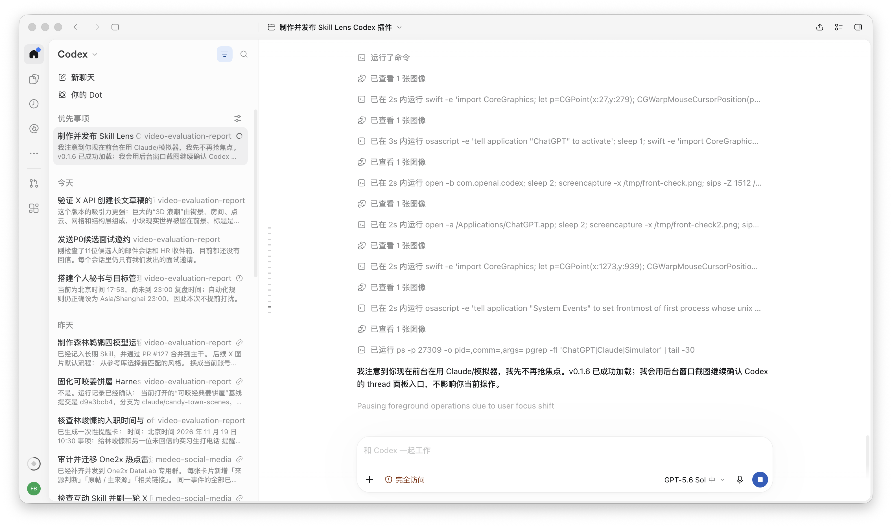
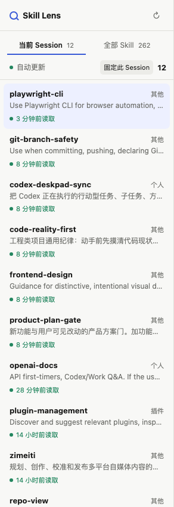

1在当前 Codex 对话打开右侧面板

点窗口右上角的「侧边面板」按钮。若先出现浏览器，在面板选择器中切换到 Skill Lens。
当前对话 → 右侧面板 → Skill Lens
SKILL LENS · 快速说明
不是搜索框，也不是独立网页。Skill Lens 是当前 Codex 对话旁边的只读面板：自动显示本 Session 读过的 Skill，并可查看完整 SKILL.md。

